前言
終於要寫 SELECT 查詢操作篇，在還沒寫到這篇前，一直在思考要內容要如何呈現，因為在 SQL 裡這個語法操作超複雜而且很多變，你想怎麼查就可以怎麼查，查詢單一資料表到查詢多張合併資料表，甚至還提供多種聚合函數，讓你想怎麼查，要查什麼，都不是問題！
廢話也不多說，來個起手式
1 | SELECT 欄位 |
所有查詢都以 SELECT 為首，SELECT 後面跟著要查詢的欄位，其後接著 FROM，FROM 後緊接著來源資料表名稱，其餘 WHERE & GROUP BY & HAVING & ORDER BY 則為非必要陳述，視個人所需添加，後續也會介紹如何使用。
特別提醒：想了解 GROUP BY & HAVING 的朋友可以先離開了，這篇不會介紹，後續會特別為這兩個語法做介紹。
查詢單一資料表
有個名為 Employees 資料表，若想查詢該資料表內所有紀錄，就需要透過萬用字元（*），語法為
1 | SELECT * FROM Employees |
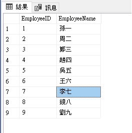
若只想查詢單一欄位，比方 EmployeeName，語法為
1 | SELECT EmployeeNames FROM Employees |
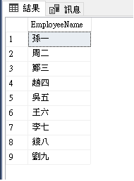
這邊要特別強調，上述兩個語法都是簡化過的語法，比較正統的寫法在欄位前需要加上 Table 及 Schema，如下
1 | -- Add Schema |
查詢多張資料表
首先手邊有兩張資料表分別為 Employees & Departments，因範例關係也稍微變更結構如下
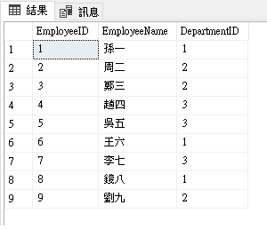
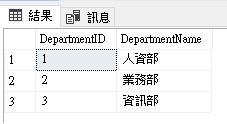
查詢兩張資料表語法如下
1 | SELECT * FROM Employees, Departments |
查詢結果
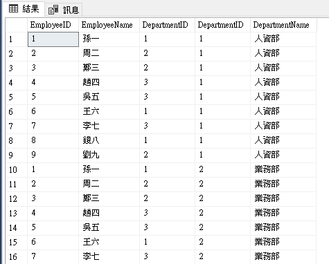
先撇開資料表之間的關聯，現階段以達到查詢多張資料表資料為主，可以發現兩張資料表的資料皆被查詢出來。
使用別名
使用 Alias Name 的時機，多為在多張資料表合併後有相同欄位名稱，變得無法判斷該欄位是隸屬哪張資料表，雖然可以在欄位名稱前加上資料表名稱，但多數會使用更簡潔的別名，來快速撰寫及分辨。使用的方法上很簡單，在資料表後面加上［AS 別名］即完成對資料表的別名，若為資料行取別名，同樣在資料行後使用［AS 別名］，甚至還可以省略［AS］直接給予別名。
1 | -- 對資料表的別名 |
查詢結果，發現原輸出 EmployeeName 已經變更為員工名稱
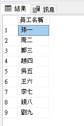
查詢重複時只輸出一筆紀錄（唯一值）
在查詢紀錄裡有多個重複紀錄，若只想輸出一筆紀錄，可使用 DISTINCT 來過濾，什麼意思呢？看下列記錄內分別有人資部、業務部和資訊部，在這樣的情況下，想知道所有部門有哪些，且每個部門只出現一次，把 DISTINCT 拿出來用就對了。
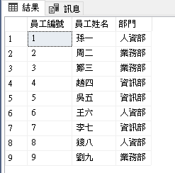
1 | SELECT DISTINCT DepartmentName AS 部門 FROM Employees |
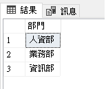
使用 DISTINCT 要注意過濾時是對整筆紀錄相同才算重複，假如 SELECT 還包含員工編號，就無法得出上述結果，因過濾條件為員工編號加上部門有重複才過濾。
WHERE 條件搜尋
在查詢資料時，總是會有想看到和不想看到的資料，或者只查詢要使用的資料，就可以使用 WHERE 來下達條件，資料如下
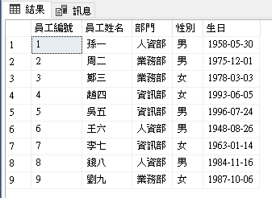
假設要查詢人資部
1 | SELECT * FROM Employees AS E |
也可以篩選多個條件，使用 AND 連接表示兩條件同時成立，下列可查詢到隸屬業務部且為女性的員工
1 | SELECT * FROM Employees AS E |
使用 OR 篩選多個條件，其中一條件成立即可，下面語法可以查詢到隸屬人資部或者為女性的員工
1 | SELECT * FROM Employees AS E |
查詢結果
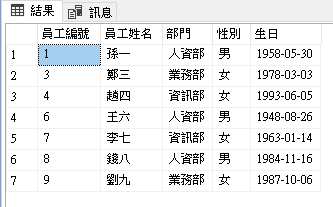
除了等號之外也可使用 LIKE 篩選資料，LIKE 與等號不同的地方在於 %，若不加 % 的情況下查詢結果等同於等號，若在條件的前後方加上 %，則為模糊查詢，如下語法，查詢開頭為［業］的部門
1 | SELECT * FROM Employees AS E |
ORDER BY 排序
輸出的資料可以使用 ORDER BY 來做排序，排序方式分別有升冪（ASC）和降冪（DESC），一般默認排序為升冪；若想對多個資料行做排序，可以使用逗號隔開；來看紀錄
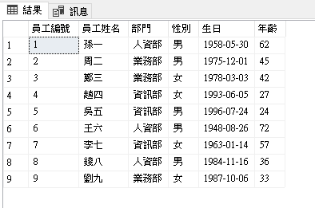
對年齡做排序
1 | SELECT * FROM Employees AS E |
由大到小排序，加上 DESC 搞定
1 | SELECT * FROM Employees AS E |
排序兩個欄位以上，就視先後順序加入
1 | SELECT * FROM Employees AS E |
查詢結果，先排序部門，後排序年齡，年齡使用降冪方式，由大到小排序
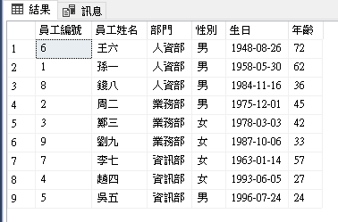
使用 TOP 輸出前 n 筆紀錄
SELECT 查詢資料時，除了可以查詢全部資料或篩選資料之外，還提供 TOP 語法來查詢前 n 筆資料，n 的部分就看要查多少給多少，通常會搭配 ORDER BY 再使用 TOP 取出前 n 筆資料比較有意義。
查詢前五筆資料
1 | SELECT TOP 5 * FROM Employees AS E |
查詢結果
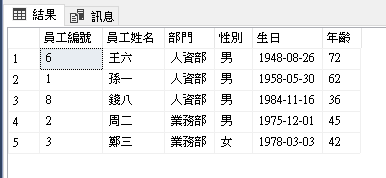
除了筆數外，也可使用百分比來查詢
1 | SELECT TOP 20 PERCENT * FROM Employees AS E |
查詢結果
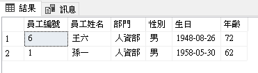
TOP 還有一個語法 WITH TIES，這語法可以將相同的資料但已經超出 TOP 指定筆數的資料給查詢出來，比如要取前三名成績最高的，但第四名與第三名成績相同，使用 WITH TIEL 第四名就不會因為筆數限制而過濾掉。
以上述的例子來說，使用 WITH TIES 語法為（這裡偷偷拿掉 Age 的排序，因 WITH TIES 的結果是指向 ORDER BY 的所有欄位）
1 | SELECT TOP 20 PERCENT WITH TIES * FROM Employees AS E |
查詢結果，同為人資部的錢八也被查詢出來了！
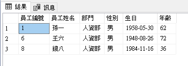